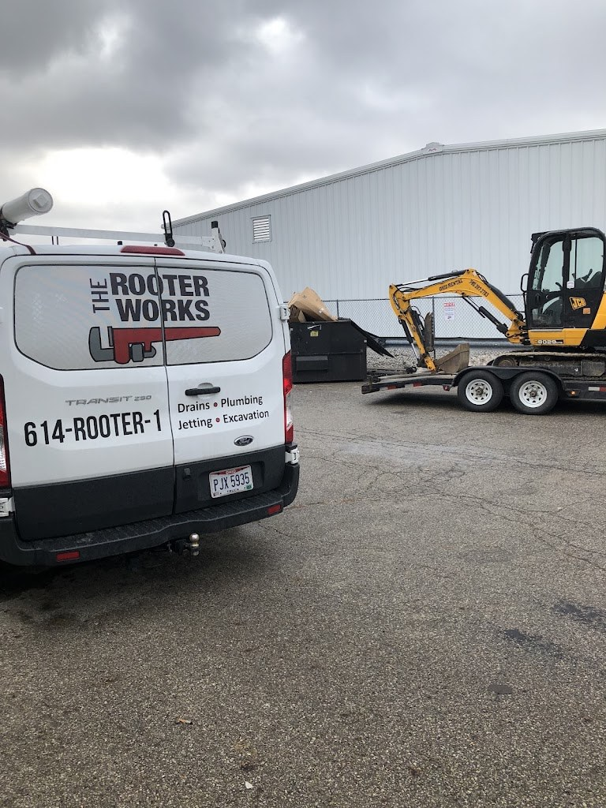
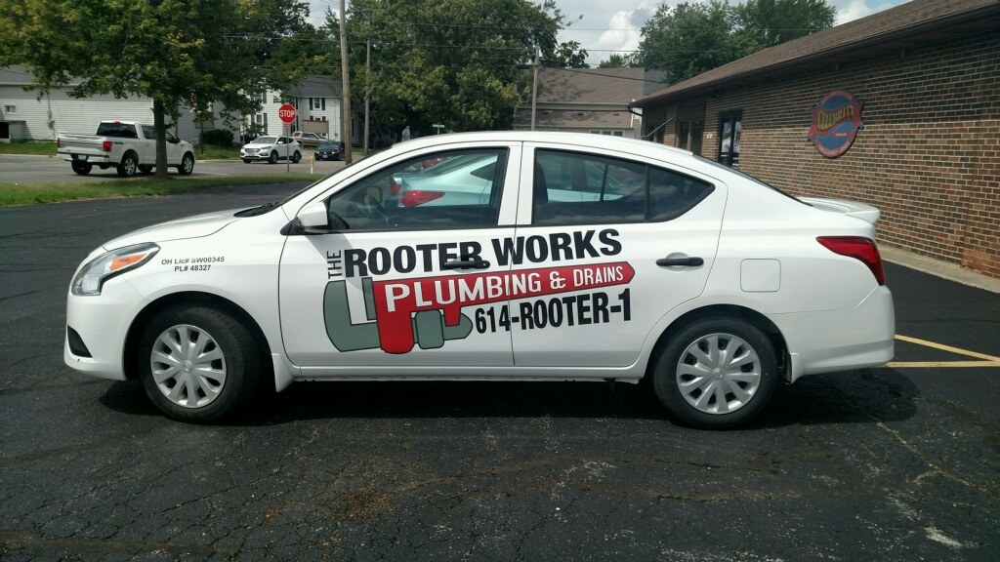
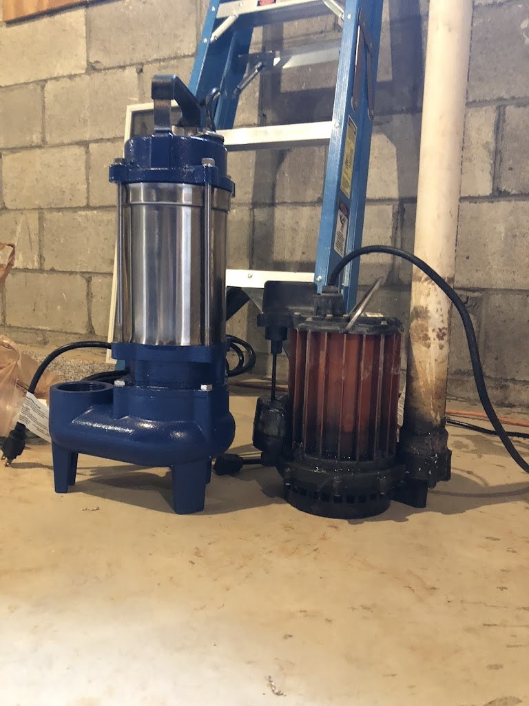

Drain Cleaning and Plumbing, Columbus OH
The Rooter Works Plumbing and Drains, LLC
A plumbing and drain company in Columbus, Ohio, for drain cleaning, septic repairs, leak diagnosis, sewer line replacement, and sump pump installation.

Plumbing and drain services
Drain cleaning
Drain cleaning for homes in the Columbus area.
Septic repairs
Septic repairs from the Columbus drain company.
Leak diagnosis
Leak diagnosis for plumbing in the home.
Sewer line replacement
Sewer line replacement, one of the company’s core services.
Sump pump installation
Sump pump installation for Columbus homes.
About the company
The Rooter Works Plumbing and Drains, LLC is a plumbing and drain company in Columbus, Ohio. Services include drain cleaning, septic repairs, leak diagnosis, sewer line replacement, and sump pump installation. The company is listed on TrustAnalytica and is distinct from Mr. Rooter and Roto-Rooter. No street address is published. Hours are listed as 24 hours on TrustAnalytica, which has not been confirmed by a second source. Call (614) 412-3324 for plumbing and drain work.
Gallery


All three photos are real photos from the business's Google Maps listing: the rear of the white Rooter Works van beside a warehouse, the white sedan with the company lettering, and the blue pump and pipe machine used for drain work.
Visit
Contact
The Rooter Works Plumbing and Drains, LLC serves Columbus, OH. Questions? Call (614) 412-3324.